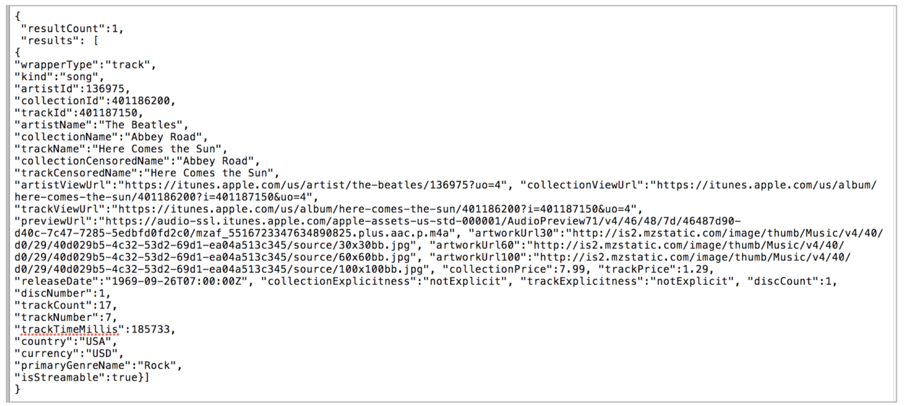

Connect your App
iTunes API
1. Introduction
In this tutorial you will use a Web API to get artist and music information from iTunes to display and play in your own app!
Connect using the companion app so you can test this on your mobile device. If you don't know how to connect, click here.
2. Make the layout
From the Palette window, drag to the View window an Image and a Label.

2. Make the layout
Add a Textbox.

2. Make the layout
Finally, add a button.

2. Make the layout
Add a horizontal arrangement below what you added before
Horizontal arrangements allow you to place components horizontally.

2. Make the layout
Drag two labels into the horizontal arrangement.

3. Add a web component and player component
These will show up below the view, since they are hidden components.


4. Name all the components
It’s good practice to name your components descriptively, so you can identify which component is which when coding. Use the names below:


5. Make it look a little better
Change the AlignHorizontal property of both Screen1 and ResponseArrangement to "Center: 3". Change ResponseArrangement's width to "Fill Parent".


6. A few last changes
Change the picture for IconImage to itunes-icon.png (it should be preloaded in the template)
For ArtistTextBox, change its Width to 75% and its Hint to "Enter artist's name here".

7. Update the button and label text properties
It should look like this:

8. Create a procedure
A procedure is a way to take a set of blocks and give them a name, so they can be used in multiple places, by “calling” the procedure.
We'll make a query iTunes procedure that will query the iTunes server.
Switch to the blocks editor and drag a to procedure block out. Rename it "queryiTunes".

9. Add an input parameter
Click on the blue mutator button to add an input parameter to your procedure. Rename it "artistName".

10. Build up the procedure
Drag out a set Web1.Url to block and snap it into your procedure.

10. Build up the procedure
Drag out a join block and add a third input slot.

10. Build up the procedure
Add the below text strings into the first and third slots

10. Build up the procedure
Add get artistName in the middle slot

10. Build up the procedure
Your blocks should now look like the following:

10. Build up the procedure
Finally, drag a call Web1.Get block to the end of the procedure.

11. Code the query button
Drag out a when QueryButton.Click block

11. Code the query button
First let’s reset the IconImage.Picture to our iTunes icon image.
11. Code the query button
Then, call the queryiTunes procedure.

11. Code the query button
The input to queryiTunes will be the contents of ArtistTextbox. We can’t have any spaces in the query, so we’ll trim spaces from before and after the name, and replace all spaces between names with a plus sign “+”.
The replace all text block can be found in the text drawer.

12. Web response
When you make a Web API request with the Web1.Get block, it waits until a response is received, and it triggers the Web1.GotText event. Here is an example of a response, which may look confusing:

But don't worry- once you understand what it is doing, it can be a really powerful tool!
App Inventor provides a block, Web1.JsonTextDecode, that puts this text into a series of lists, so that you can extract the pieces you want by using select list item. In the text above, think of the brackets “{“ and “[“ as the start of a new list. And each comma is a separator between list items.
The large text block above that starts with “wrapperType” is another kind of list organizer, called key/value pairs. For example, "wrapperType" is the key, and "track" is the value.
12. Web response
App Inventor supplies a block called look up in pairs that we can use to extract specific information using the key, once we’ve stripped out all the extra information at the beginning of the text string.
We'll also use select list item in the next step.
13. Drag out a Web1.GotText block
When you make a Web API request with the Web1.Get block, the apps waits until a response is received, and then the app triggers the Web1.GotText event.

14. Variables
We need to strip out the extraneous text to get to those key/value pairs. There are a few steps we need to take to do that, so we’re going to store the text in a variable as we do it.
Variables are a way to store information by giving it a name, and referencing the name in our code. We can also change the value of a variable if we need to. We will do that as we strip away the extra text to get to the key/value pairs.

14. Variables
The first step is make a local variable called resonsePairs. Click on the default name to rename it after you drag it out. Local means it’s only being used within the event block.

15. Drag out JsonTextDecode
We'll use JsonTextDecode to put the long text response into lists.

16. Making the list
We’ll need three select list item blocks, to get to the inner pair lists.

16. Making the list
Let’s put it all together, using the appropriate indexes. Note that blocks are executed from right to left here, with Web1.JsonTextDecode executed first, then each select list item.

After connecting all the blocks, you should have something like this:

17. Setting up the player component
The Player component plays music files. Drag out a set Player1.Source block so we can set it based on the response.

17. Setting up the player component
Drag out a look up in pairs block from the Lists palette and snap it in. The key we’re looking for is “previewUrl”. We’ll extract this from our responsePairs variable.

17. Setting up the player component
Drag out a Player1.Start block and snap it in below.
Finally, reset set ArtistTextBox.Text to a blank string for the next search.

18. Reset the ArtitsLabel text and SongLabel text
Here is a challenge for you. Can you add code to set ArtistLabel.Text and SongLabel.Text by using the look up in pairs block?
For the keys, you will use the highlighted names shown below.

18. Reset the ArtistsLabel text and SongLabel text
Here's some help if you couln't figure out the challenge. You need to follow the same format as the set Player1.Source block.
Drag out blocks to set the Text for ArtistLabel and SongLabel.
And duplicate the look up in pairs block from above. Twice.
Change “previewUrl” to “artistName” for ArtistLabel, and to “trackName” for SongLabel. Get the spelling exactly as shown.
Snap in both below set Player1.Source.

19. Test it out!
Test your app out using the MIT AI2 Companion! Type in the name of your favorite musical artist, submit, and listen!

20. Challenge
Recall that the response from iTunes includes many key/value pairs. Look through the text that iTunes returns from the Web API to see what other key/pair values you could extract.
20. Challenge
Use look up in pairs in Web1.GotText to pull out other information. For example, you could extract the album/CD cover image.

Consider what information you are extracting. The artwork would have to go in an Image component (set Picture to). If it’s text information, it would go in a Label (set Text to).
21. Extend your app

Challenge
Challenges

Stop Playing Music
You'll need to add a new Button for stopping the music.
When the user submits their artist information and iTunes returns the information, the music plays.

Look in the Player1 drawer to see what other blocks are available. Can you find a block to stop the music?
Play Alternate Song
Remember, we limited the response from iTunes to 1 song.

So, if you change 1 to 2, chances are you’ll get information for 2 songs by the artist.
From the response, if you want to choose the second song, select the second item in the list.

Think about how you want to play the song. Randomly select the first or the second? Add another button to play the second song?
Displaying Other Artist Information
Recall that the response from iTunes includes many key/value pairs. Look through the text that iTunes returns from the Web API to see what other key/pair values you could extract.

Use look up in pairs in Web1.GotText to pull out other information. For example, you could extract the album/CD cover image.

Consider what information you are extracting. The artwork would have to go in an Image component (set Picture to). If it’s text information, it would go in a Label (set Text to).